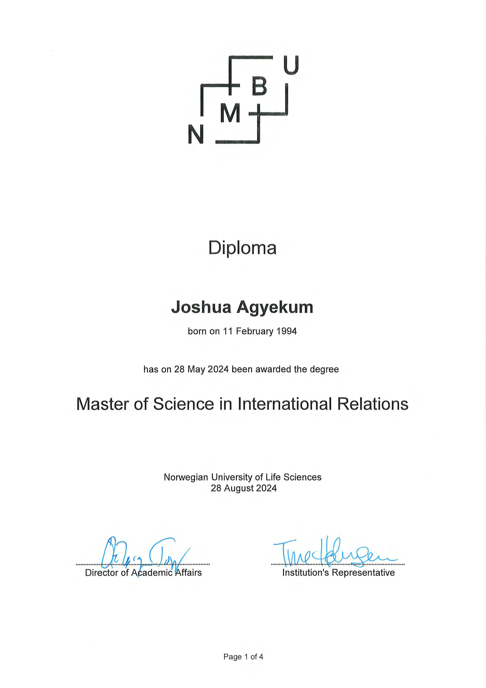

Joshua Agyekum
Educational Technology Developer
Oslo, Norway
joshuaagyekum21@gmail.com+47 46399384
Languages: English (Fluent), Norwegian (B1)

Professional Summary
Educational Technology Developer with an M.Ed. in Educational Technology and an MSc in International Relations. Builds digital learning solutions — SCORM-compliant games, AI-adaptive platforms, LMS integrations, and learning analytics tools. Strong background combining pedagogical expertise with technical implementation. Based in Oslo, Norway with Norwegian B1 proficiency (B2 listening) and direct barnehage experience.
Professional Experience
Substitute Kindergarten Assistant
Brobyggere, Oslo | Jun 2025 – Dec 2025
- Supported children aged 0–6 in a Norwegian barnehage, working fully in Norwegian alongside qualified pedagogues
- Completed Assistentprøven – Grunnkurs Barnehage
Operations Associate (Part-time)
Wolt Market Center, Oslo | Jul 2024 – Present
- Norwegian workplace experience alongside instructional design portfolio and development work
General Secretary (Elected)
National Service Personnel Association (NASPA), Ga South | 2018–2019
- Elected during Ghana's mandatory National Service year. Coordinated professional development and managed documentation across government institutions
Primary School Teacher
Brainhill International School, Ghana | Apr 2017 – Mar 2019
- Taught primary school pupils across subjects — part-time during university, then full-time after graduation
- Designed lessons, managed classroom, and adapted teaching to different learning needs
Teaching Assistant (National Service)
Kaneshie Awudome JHS, Ghana | Sep 2018 – Aug 2019
- Supported classroom instruction and developed visual learning materials
Creative Learning Facilitator
Global Access Academy, Ghana | Oct 2013 – Nov 2014
- Facilitated learning for primary students using creative and visual teaching approaches
Technical Skills & Platforms
EdTech Development
- Learning Management Systems (LMS) development and administration
- Educational software architecture and UX design
- SCORM compliance and xAPI/Tin Can API integration
- WCAG accessibility for inclusive design
Learning Management Systems
- Moodle: Course creation, user management, assessment tools
- Canvas: Content delivery, gradebook integration, discussion forums
- Google Classroom: Assignment distribution, collaboration tools
- Microsoft Teams for Education: Virtual classrooms, file sharing
Content Creation & Authoring Tools
- H5P: Interactive content creation (quizzes, presentations)
- Articulate Storyline: Interactive e-learning module development
- Adobe Captivate: Software simulation and responsive design
- Canva for Education: Visual content and infographic design
Data Analysis & Learning Analytics
- Python: Pandas, NumPy, Streamlit for analytics dashboards
- R: Statistical analysis and educational research
- Power BI: Educational dashboards and performance visualisation
- xAPI / LMS Analytics: Learner behaviour and engagement tracking
Cloud Infrastructure & DevOps (Training)
- AWS: EC2, S3, ECS fundamentals — DevOps Engineering training (JOMACS IT Solutions, Canada, 2025)
- Containerisation: Docker, Kubernetes
- Infrastructure as Code: Terraform
- CI/CD Pipelines: GitHub Actions
Featured EdTech Projects
AI-Driven Adaptive Learning Game — WebXR Platform
- Technology: WebXR, Three.js, AI-powered interactive characters, Progressive Web App
- Features: VR headset support, desktop compatibility, immersive 3D environments
NorskLær — Norwegian Language Learning Platform
- Technology: Python/Django, React.js, PostgreSQL, Docker
- Features: Adaptive learning, speech recognition, CEFR levels A1–C2
EduAnalytics Pro — Learning Analytics Dashboard
- Technology: Python, Streamlit, machine learning, Power BI concepts
- Analytics: Course engagement visualisation, learner dropout risk prediction
- Deployed: Live app — viewable by anyone without setup
Quest of the Sky Coders — AI-Adaptive Learning Game
- Technology: HTML5, JavaScript, SCORM 1.2, xAPI tracking, responsive design
- Features: 6 learning islands, adaptive difficulty, teacher dashboard, mobile-optimised
Eco Explorers — SCORM/xAPI HTML5 Game
- Technology: Vanilla HTML/CSS/JS, SCORM 1.2 wrapper, xAPI statements
- Features: 6 educational levels, LMS compatibility, WCAG accessibility compliance
Little Explorers — Interactive Educational Platform
- Target Audience: Children ages 5–12
- Features: Character-based learning, progress tracking, achievement system
Cloud Skills for Beginners — SCORM eLearning Course
Articulate Storyline 360 Development
- Technology: Storyline 360, HTML5/JS, SCORM 1.2, accessibility features
- Design: ADDIE methodology, Bloom's taxonomy, Mayer's multimedia principles
AWS Cloud Infrastructure Projects
- Infrastructure: Terraform modules, VPC, ECS Fargate, automated CI/CD
- Deployment: Docker containerisation, AWS ECR, CloudWatch monitoring
Education & Certifications
Degrees
- MSc International Relations — Norwegian University of Life Sciences (NMBU), 2022–2024
- M.Ed. Educational Technology — Huzhou University, China, 2019–2022 (HK-dir recognised: equivalent to Norwegian 2-year Master's + 1 additional year)
- B.Ed. Education — University of Education, Winneba, Ghana, 2014–2018 (HK-dir recognised: equivalent to Norwegian Bachelor's, 180 ECTS)
Professional Certifications
- W3Schools Certified: Git Practitioner (Professional), Python Developer, SQL Developer, R Developer
- AWS Cloud Essentials — cloud infrastructure fundamentals
- Power BI Essential Training 2024 — LinkedIn Learning
- Norwegian Language Proficiency: B1 (B2 Listening) — Norsk Prøven, Oslo Voksenopplæring Rosenhof, Jun 2025
- Assistentprøven — Grunnkurs Barnehage (Brobyggere / Aasebø Kompetanse AS, Sep 2025)
- TEFL Certificate — 120 hours, High Distinction
Research & Publications
Published Research (2021)
International Journal of Management Sciences and Business Research
- Natural Science & Real Life Learning — Lead Author
- STEAM Education Model — Sole Author
- Classroom Management & Student Well-being — Co-Author
Certificates & Credentials
Norwegian Language Proficiency

Kompetanse Norge – B1
Educational Technology Degree

M.Ed. Educational Technology — Huzhou University
TEFL Certification

120-Hour TEFL Certificate (High Distinction)
Bachelor's Degree

B.Ed. Education — University of Education, Winneba
Norwegian University Degree

MSc International Relations — NMBU Norway
National Teaching Certificate

National Teaching Certificate — Ghana
English Language Proficiency

English Language Proficiency Certificate
Mandarin Language Proficiency

HSK 3 — Ministry of Education P.R. China
Leadership Certificates

Certificates of Honour for Leadership